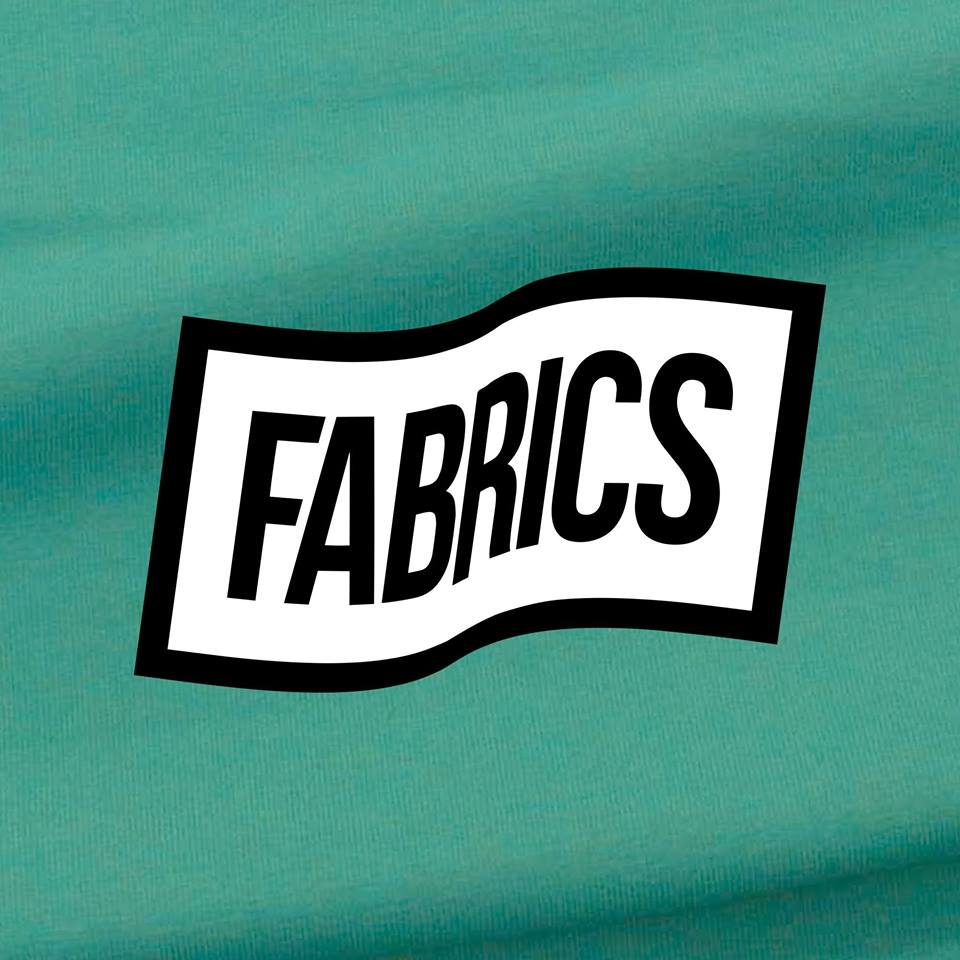

<nav class="navbar navbar-brand-centered navbar-expand-lg navbar-light sticky-top">
  <div class="container">
    <!-- Brand and toggle get grouped for better mobile display -->
<!--    <div class="navbar-header">
      <button type="button" class="navbar-toggle" data-toggle="collapse" data-target="#navbar-brand-centered">
        <span class="sr-only">Toggle navigation</span>
        <span class="icon-bar"></span>
        <span class="icon-bar"></span>
        <span class="icon-bar"></span>
      </button>
    </div>-->

    <!-- Collect the nav links, forms, and other content for toggling -->
    <div class="collapse navbar-collapse" id="navbar-brand-centered">
      <ul class="nav navbar-nav">
        <li class="nav-item" *ngFor="let categorie of listCategoriePhare | slice:0:3">
          <span class="nav-link" (click)="goToListeProduitByCategorie(categorie)">{{categorie.name}} <span class="sr-only">(current)</span></span>
        </li>
      </ul>
      <div class="navbar-brand navbar-brand-centered" (click)="goHome()">
        
      </div>
      <ul class="nav navbar-nav navbar-right">
        <li class="nav-item" *ngFor="let categorie of listCategoriePhare | slice:3:6">
          <span class="nav-link" (click)="goToListeProduitByCategorie(categorie)">{{categorie.name}} <span class="sr-only">(current)</span></span>
        </li>
        <li class="nav-item dropdown">
          <a class="nav-link dropdown-toggle" href="#" id="navbarDropdownMenuLink" data-toggle="dropdown" aria-haspopup="true" aria-expanded="false">
            Autres
          </a>
          <div class="dropdown-menu z-depth-5" aria-labelledby="navbarDropdownMenuLink">
            <a class="dropdown-item" href="#" *ngFor="let categorie of listeCategAutre">{{categorie.name}}</a>
          </div>
        </li>
      </ul>
    </div><!-- /.navbar-collapse -->
  </div><!-- /.container-fluid -->
</nav>
